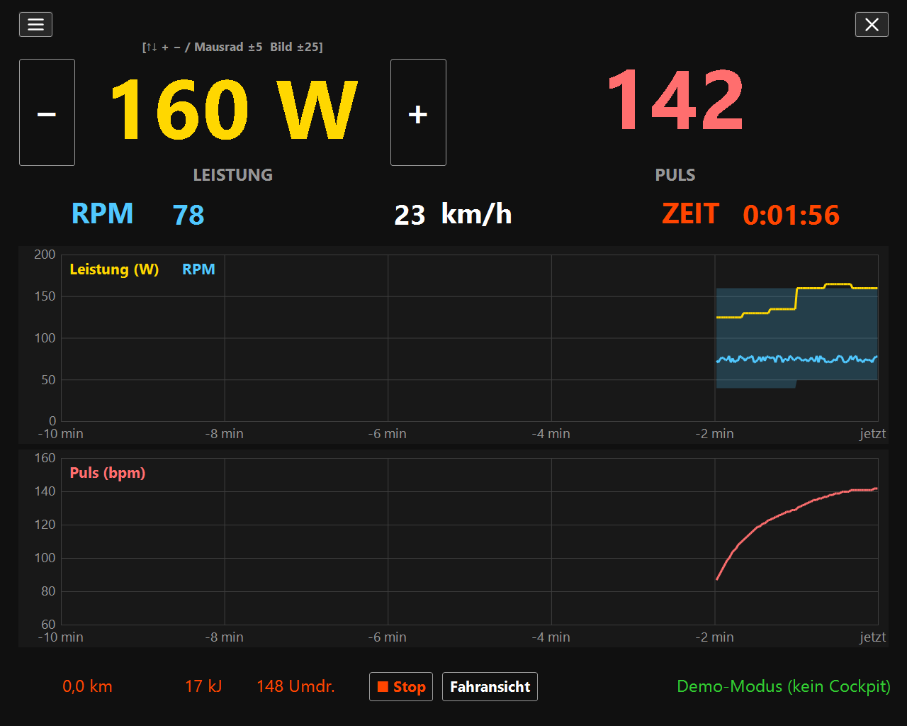
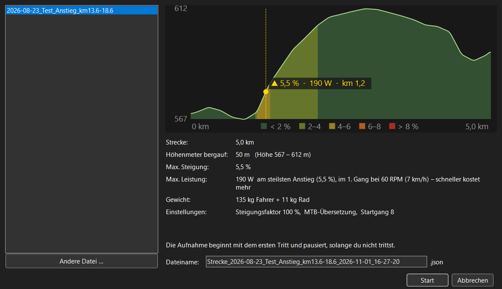
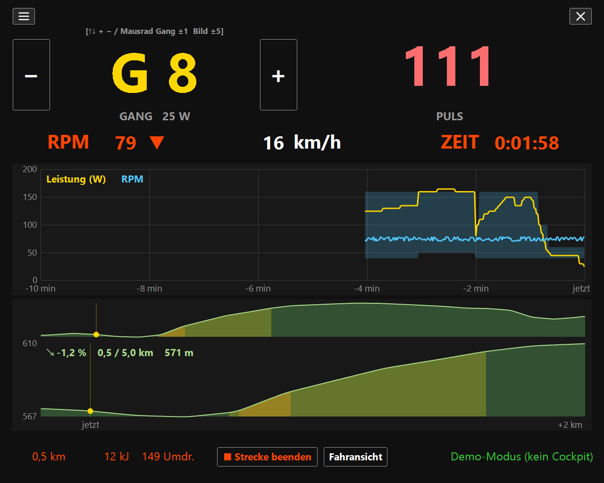
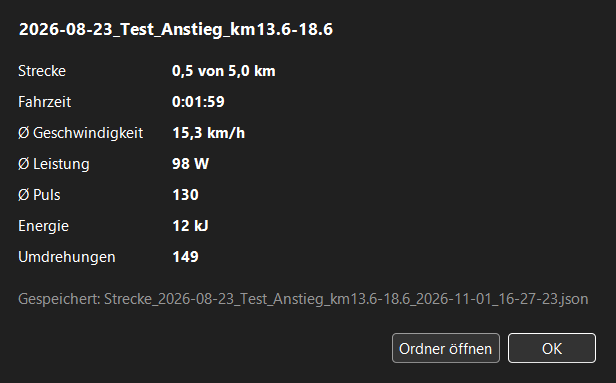
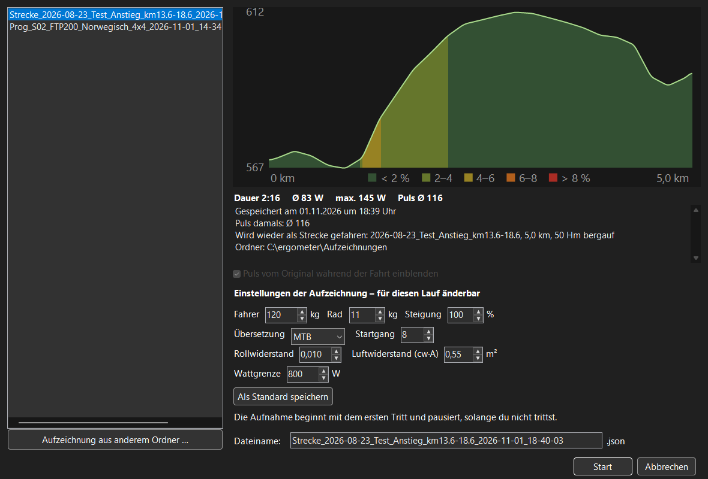
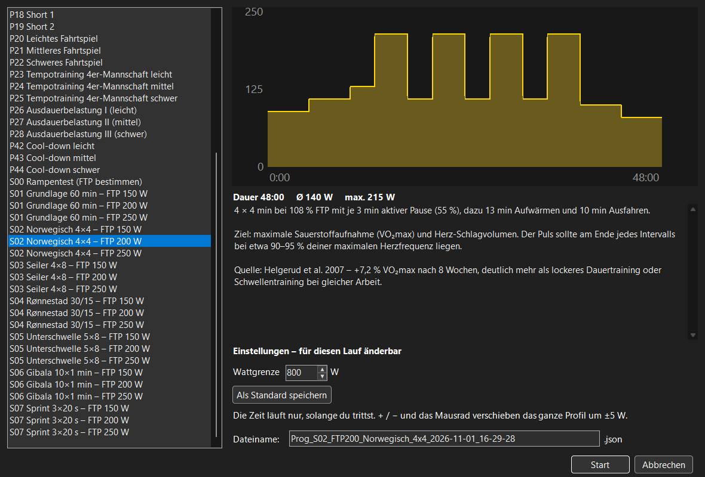
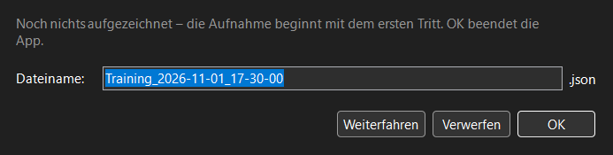
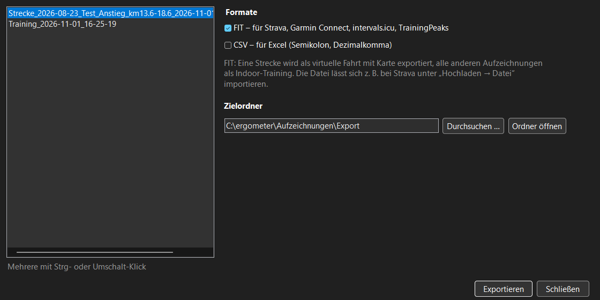
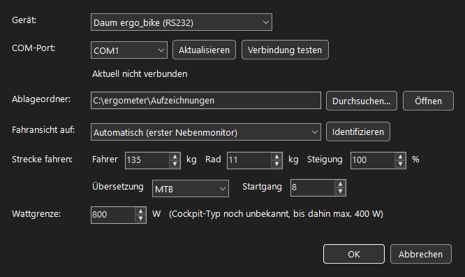

Erste Schritte
- Ergometer einschalten und das Cockpit per RS232-Kabel (bzw. USB-RS232-Adapter) mit dem PC verbinden.
ErgoWattControl.exestarten. Die App verbindet sich mit dem eingestellten Gerät; unten rechts steht der Verbindungsstatus.- Beim ersten Start unter ☰ → Einstellungen als Gerät „Daum ergo_bike (RS232)“ und den COM-Port wählen und mit Verbindung testen prüfen; dort auch Gewicht und Wattgrenze eintragen. Ohne Ergometer zum Ausprobieren: Gerät „Demo“.
- Losfahren: im freien Training die Leistung mit ↑ ↓ oder dem Mausrad einstellen – oder über das Menü ☰ eine Strecke, ein Training oder ein Programm wählen.
Die Fahransicht

| Bereich | Bedeutung |
|---|---|
| LEISTUNG (gelb) | Vorgegebene Leistung in Watt, mit − / + daneben. Weicht die tatsächliche Leistung mehr als 5 W ab, steht darüber [Ist … W]. |
| PULS (rot) | Herzfrequenz vom Brustgurt bzw. Ohrclip des Cockpits. |
| RPM, km/h, ZEIT | Trittfrequenz, Geschwindigkeit und Fahrzeit. Ein ▲ neben RPM heißt „schneller treten“, ein ▼ „langsamer treten“. |
| Oberer Graph | Leistung (gelb) und Trittfrequenz (blau) der letzten 10 Minuten. Die blaugraue Fläche ist der Trittfrequenzbereich, in dem die Wirbelstrombremse die eingestellte Leistung halten kann (z. B. 40–160 RPM bis 150 W, 50–160 RPM bis 250 W). Sie gehört zur blauen Linie. |
| Unterer Graph | Puls der letzten 10 Minuten. Beim Streckenfahren steht hier das Höhenprofil, bei Aufzeichnungen und Programmen der Leistungsverlauf. |
| Untere Zeile | Strecke, Energie und Kurbelumdrehungen der laufenden Aufnahme, die Aufnahme-Taste, Fahransicht/Hauptbildschirm (Monitor wechseln) und der Verbindungsstatus. |
Tasten und Maus
Die Tasten wirken immer, egal welches Element gerade den Fokus hat. Der Ziffernblock funktioniert mit und ohne NumLock – praktisch mit einer Funk-Tastatur am Lenker.
| Taste | Freies Training | Strecke | Training / Programm |
|---|---|---|---|
| ↑ + 8 · Mausrad hoch | +5 W | 1 Gang höher | ganzes Profil +5 W |
| ↓ − 2 · Mausrad runter | −5 W | 1 Gang tiefer | ganzes Profil −5 W |
| Bild ↑ 9 | +25 W | 5 Gänge höher | Profil +25 W |
| Bild ↓ 3 | −25 W | 5 Gänge tiefer | Profil −25 W |
| Enter | Aufnahme starten / stoppen | – (die Aufnahme läuft automatisch) | |
| 0 Einfg | Fenster zwischen Fahrer-Monitor und Hauptbildschirm umschalten | ||
| F1 | Diese Hilfe, gleich beim passenden Abschnitt – auch in jedem Dialog | ||
Freies Training
Ohne Strecke oder Programm stellst du die Leistung selbst ein (25 W bis zur Wattgrenze, in 5-W-Schritten). Die Bremse hält die Leistung unabhängig von der Trittfrequenz.
● Aufnahme (oder Enter) startet die Aufzeichnung, ■ Stop beendet sie. Danach fragt ein Dialog nach dem Dateinamen – siehe Aufnahme beenden.
Strecke fahren
☰ → Strecke fahren … zeigt die GPX-Dateien aus dem Streckenordner (Dokumente\ErgoWattControl\GPX, siehe Dateien und Ordner). Zur markierten Strecke siehst du das Höhenprofil (eingefärbt nach Steigung, der steilste Anstieg ist markiert), Länge, Höhenmeter, maximale Steigung und die Leistung, die sie im 1. Gang bei 60 RPM kostet. Liegt die über deiner Wattgrenze, steht das in Rot da. GPX-Datei aus anderem Ordner … holt eine Strecke von woanders.
Während der Fahrt berechnet die App die Bremsleistung aus Steigung, Gewicht (Fahrer + Rad), Roll- und Luftwiderstand und der virtuellen Geschwindigkeit – die ergibt sich aus Trittfrequenz × Gang. Du schaltest wie draußen: höherer Gang = schneller und schwerer.



- 28 Gänge, Übersetzung MTB (kleinere Gänge, am Berg langsam kurbeln möglich) oder Rennrad.
- Der Steigungsfaktor macht alle Steigungen flacher (50 % = halb so steil) – so werden bergige Strecken fahrbar.
- Die Aufnahme beginnt mit dem ersten Tritt und pausiert, solange du nicht trittst. Am Ziel endet die Fahrt mit einer Zusammenfassung.
- ■ Training beenden (unten) oder ☰ → Training beenden bricht vorzeitig ab.
Aufzeichnung nachfahren
☰ → Aufzeichnung nachfahren … listet deine Aufzeichnungen, die neueste zuerst. Zur markierten siehst du den Verlauf (Leistung und auf Wunsch den Puls von damals), Dauer, Ø- und Maximalleistung.
- Aufzeichnung einer Strecke: wird wieder als Strecke gefahren – mit der in der Aufzeichnung gespeicherten Strecke und ihren Einstellungen (Gewicht, Übersetzung, …), die du für diesen Lauf ändern kannst.
- Freies Training oder Programm: folgt dem aufgezeichneten Leistungsverlauf. Die Zeit läuft nur, solange du trittst; ↑ ↓ verschieben das ganze Profil.
- Puls vom Original einblenden zeigt während der Fahrt den Puls von damals zum Vergleich.
- Ältere Aufzeichnungen im CSV-Format lassen sich weiter nachfahren.
- Aufzeichnung aus anderem Ordner … öffnet eine Aufzeichnung von woanders, z. B. von einem USB-Stick.
- ■ Training beenden (unten) oder ☰ → Training beenden bricht vorzeitig ab.

Trainingsprogramm starten
☰ → Trainingsprogramm starten … listet die Trainingsprogramme mit Leistungsverlauf, Dauer und Beschreibung.

P01–P44: Programme aus dem Handbuch
Die wattgesteuerten Festprogramme des 8008 TRS (Leistungstests WHO/BAL, Intervall, Pyramide, Berge, Fahrtspiele, Mannschafts-Tempotraining, Ausdauer, Cool-down) mit festen Wattwerten. Sie sind aus den Grafiken des Handbuchs abgelesen. Die Pulsprogramme (29–38) und Höhenprofile (39–41) fehlen, weil die App nur Watt steuert.
S00–S07: Programme nach aktueller Trainingswissenschaft
| Programm | Hauptteil | Wofür |
|---|---|---|
| S00 Rampentest | +20 W pro Minute bis zur Erschöpfung | FTP bestimmen |
| S01 Grundlage 60 min | 55 min bei 65 % FTP | Grundlagenausdauer – der Großteil des Trainings |
| S02 Norwegisch 4×4 | 4 × 4 min bei 108 % | VO₂max (Helgerud 2007) |
| S03 Seiler 4×8 | 4 × 8 min bei 98 % | VO₂max und Schwelle (Seiler 2013) |
| S04 Rønnestad 30/15 | 3 × 13 × (30 s 125 % / 15 s locker) | VO₂max, Leistung über 20 min |
| S05 Unterschwelle 5×8 | 5 × 8 min bei 90 % | Schwellentraining mit wenig Ermüdung |
| S06 Gibala 10×1 min | 10 × 1 min bei 115 % | zeitsparendes Intervalltraining |
| S07 Sprint 3×20 s | 3 × 20 s bei 200 % | Minimalprogramm, 10 min |
Jedes S-Programm gibt es für FTP 150, 200 und 250 W. Ein typischer Wochenaufbau: zwei harte Einheiten (S02–S06), der Rest locker (S01). Quellen und Details stehen in Programme\LIESMICH.md im Projekt.
FTP und Rampentest
Die FTP (Functional Threshold Power) ist die Leistung, die du etwa eine Stunde halten kannst. So bestimmst du sie:
- S00 Rampentest fahren: 5 min bei 100 W, danach jede Minute +20 W.
- Abbrechen, wenn du die Trittfrequenz nicht mehr halten kannst.
- FTP ≈ 75 % der letzten Stufe, die du eine volle Minute gehalten hast (Beispiel: 260 W geschafft → FTP ≈ 195 W).
- Die S-Programme mit der nächstgelegenen Stufe wählen und bei Bedarf mit ↑ ↓ anpassen.
Einstellungen für einen Lauf
Die Startdialoge von Aufzeichnung nachfahren und Trainingsprogramm starten zeigen die Einstellungen, die für den Lauf wirken, und lassen sie nur für diesen Lauf ändern:
- Bei Leistungsverläufen (Programme, freie Trainings) nur die Wattgrenze.
- Bei einer Strecken-Aufzeichnung zusätzlich Gewichte, Steigungsfaktor, Übersetzung, Startgang, Roll- und Luftwiderstand – vorbelegt mit den Werten, mit denen sie aufgezeichnet wurde.
Als Standard speichern übernimmt die angezeigten Werte in die settings.json; sie gelten dann auch für neue Strecken und im Einstellungsdialog.
Aufnahme beenden, umbenennen, verwerfen
Nach ■ Stop im freien Training fragt ein Dialog nach dem Dateinamen; vorgeschlagen ist der bisherige Name.
| Knopf | Wirkung |
|---|---|
| OK | Speichert unter dem Namen im Feld (unverändert = bisheriger Name). |
| Verwerfen | Löscht die Aufnahme, ohne weitere Nachfrage. |
| Weiterfahren | Nur beim Schließen der App: zurück, die Aufnahme läuft weiter. |

☰ → Training beenden beendet, was gerade läuft: eine Strecke, eine nachgefahrene Aufzeichnung oder ein Programm – oder im freien Training die Aufnahme, wie ■ Stop.
Schließt du die App während einer Aufnahme oder eines Trainings (✕ oder ☰ → Beenden), erscheint derselbe Dialog als „ErgoWattControl beenden“; OK speichert und beendet die App. Den Dateinamen einer Strecke, eines Trainings oder Programms kannst du schon im Startdialog ändern.
Aufzeichnungen exportieren
☰ → Aufzeichnung exportieren … wandelt Aufzeichnungen für andere Programme um. Links eine oder mehrere Aufzeichnungen markieren (mehrere mit Strg- oder ⇧-Klick), rechts die Formate ankreuzen und den Zielordner wählen, dann Exportieren.

| Format | Wofür |
|---|---|
| FIT | Zum Hochladen bei Strava, Garmin Connect, intervals.icu oder TrainingPeaks. Enthält Leistung, Trittfrequenz, Puls, Geschwindigkeit und Strecke. Eine Strecke wird als virtuelle Fahrt exportiert – mit der Position der gefahrenen Strecke, sodass die Plattform sie auf der Karte zeigt, sie aber nicht als echte Ausfahrt wertet. Alle anderen Aufzeichnungen erscheinen als Indoor-Training. |
| CSV | Für Excel: Semikolon und Dezimalkomma, öffnet direkt im deutschen Excel. Eine Zeile pro Sekunde mit Uhrzeit und allen Messwerten. |
Die Dateien heißen wie die Aufzeichnung, mit der Endung .fit bzw. .csv. Vorgabe für den Zielordner ist Export\ im Ablageordner; Formate und Ordner merkt sich die App. Bei Strava lädst du die FIT-Datei unter Hochladen → Datei hoch, bei Garmin Connect unter Importieren → Daten.
Exportiert werden die Aufzeichnungen im JSON-Format; ältere CSV-Aufzeichnungen öffnen sich ohnehin direkt in Excel.
Einstellungen
☰ → Einstellungen …

| Feld | Bedeutung |
|---|---|
| Gerät | Welches Ergometer die App steuert: Daum ergo_bike (RS232) oder Demo – ein simulierter Fahrer zum Ausprobieren ohne Ergometer. Nach dem Speichern verbindet sich die App sofort neu. |
| COM-Port | Schnittstelle des Cockpits. Aktualisieren liest die Ports neu ein (z. B. nach dem Einstecken eines USB-Adapters), Verbindung testen prüft, ob ein Cockpit antwortet. |
| Ablageordner | Wohin die Aufzeichnungen geschrieben werden. |
| Fahransicht auf | Monitor für die Fahransicht; Identifizieren zeigt auf jedem Monitor seine Nummer. |
| Strecke fahren | Fahrer- und Radgewicht, Steigungsfaktor, Übersetzung, Startgang. |
| Wattgrenze | Höchste Leistung, die die App einstellt. Das Cockpit 8008/8080 erlaubt bis 800 W, andere 400 W. |
Weitere Werte stehen in der settings.json (siehe Dateien und Ordner), darunter die Muster der Dateinamen:
| Einstellung | Für | Vorgabe |
|---|---|---|
FileNameTraining | freies Training und nachgefahrene Aufzeichnung | Training_{Datum}_{Uhrzeit} |
FileNameRoute | Strecke fahren | Strecke_{Strecke}_{Datum}_{Uhrzeit} |
FileNameProgram | Trainingsprogramm starten | Prog_{Programm}_{Datum}_{Uhrzeit} |
Platzhalter: {Datum}, {Uhrzeit}, {Strecke}, {Training}, {Programm}. Außerdem: RollingResistance (Rollwiderstand, 0,010) und DragAreaM2 (Luftwiderstandsfläche cw·A, 0,55 m²).
Dateien und Ordner
Die App speichert ihre Daten in den üblichen Windows-Ordnern – unabhängig davon, wo sie installiert ist:
| Datei / Ordner | Ort | Inhalt |
|---|---|---|
settings.json | %AppData%\ErgoWattControl | Einstellungen; wird beim ersten Start angelegt. |
Fehler.log | %AppData%\ErgoWattControl | Details, wenn eine Datei nicht geladen oder geschrieben werden konnte. |
Aufzeichnungen\ | Dokumente\ErgoWattControl | Aufzeichnungen (Standard-Ablageordner, in den Einstellungen änderbar). |
GPX\ | Dokumente\ErgoWattControl | Strecken für „Strecke fahren“. |
Programme\ | Dokumente\ErgoWattControl | Die mitgelieferten Programme. Sie stecken in der exe; beim Start schreibt die App fehlende oder veränderte Dateien neu – Änderungen an diesen Dateien werden also überschrieben. Eigene Programme unter anderem Namen bleiben erhalten. |
Portabel: Liegt neben der exe eine settings.json, bleibt alles im Programmordner – Einstellungen, Fehler.log, Aufzeichnungen\, GPX\ und Programme\ liegen dann neben der exe. So laufen ältere Installationen und ZIP-Kopien unverändert weiter; für einen USB-Stick legst du einfach eine (auch leere) settings.json neben die exe.
Setup: Es installiert die App für den angemeldeten Benutzer nach %LocalAppData%\Programs\ErgoWattControl, mit Verknüpfung im Startmenü und – wenn angehakt – auf dem Desktop. Fehlt die .NET 10 Desktop Runtime, installiert es sie mit. Am Ende kannst du die App gleich starten, auf Wunsch im Demo-Modus. Beim Deinstallieren (Windows-Einstellungen → Apps) bleiben Einstellungen und Aufzeichnungen erhalten.
Aufzeichnungen (JSON)
Eine Aufzeichnung enthält die Art (Training, Strecke, Programm), Start und Ende, die Einstellungen beim Start, die Vorgabe (Strecke alle 10 m mit Höhe und Koordinaten bzw. den Leistungsverlauf) und pro Sekunde eine Zeile Messwerte: Soll- und Ist-Leistung, RPM, Puls, Geschwindigkeit, Strecke, Energie, Umdrehungen, bei Strecken auch Steigung und Gang. Die Datei wird alle 10 Sekunden vollständig neu geschrieben – bei einem Absturz oder Stromausfall fehlen höchstens diese Sekunden.
Eigene Programme
Ein Programm ist eine JSON-Datei in Programme\:
{
"Name": "Mein Programm",
"Beschreibung": "Text für den Auswahldialog",
"Profil": [ [0, 100], [300, 150], [600, 100], [900, 100] ]
}
Profil sind Paare aus Sekunde und Watt; die Leistung gilt bis zum nächsten Punkt, der letzte Punkt markiert das Ende. Wähle einen Dateinamen, der nicht mit einem mitgelieferten Programm übereinstimmt.
Startparameter
| Aufruf | Wirkung |
|---|---|
ErgoWattControl.exe | Normalbetrieb mit dem Cockpit. |
-demo [Datei] | Demo ohne Ergometer (wie „Gerät: Demo“ in den Einstellungen): ein simulierter Fahrer tritt mit etwa 75 RPM. Mit einer GPX-Datei startet diese Strecke sofort, mit einer Aufzeichnung oder einem Programm wird dieses nachgefahren. |
-main | Startet auf dem Hauptbildschirm statt auf dem Fahrer-Monitor (kombinierbar mit -demo). |
-help | Zeigt die Parameter. |
Wenn etwas nicht klappt
„Verbinde …“ bleibt stehen
- Ist das Ergometer eingeschaltet und das Kabel am richtigen Port? In den Einstellungen Verbindung testen.
- Nach einem Cockpit-Reset verbindet sich die App von selbst neu.
Die Leistung kommt nicht an / ▲ neben RPM
Die Wirbelstrombremse kann eine Leistung nur in einem bestimmten Trittfrequenzbereich halten (blaugraue Fläche im Graphen). Bei hoher Leistung musst du schneller treten – über 250 W mindestens 60 RPM, über 500 W mindestens 100 RPM.
Eine Strecke ist zu schwer
Steigungsfaktor verringern (z. B. 50 %), einen kleineren Gang wählen oder auf MTB-Übersetzung umstellen. Die Leistung wird in jedem Fall auf die Wattgrenze begrenzt.
Eine Datei lässt sich nicht laden
Die Meldung nennt den Grund; die vollständigen Details stehen in Fehler.log (in %AppData%\ErgoWattControl, bei portabler Nutzung neben der exe).